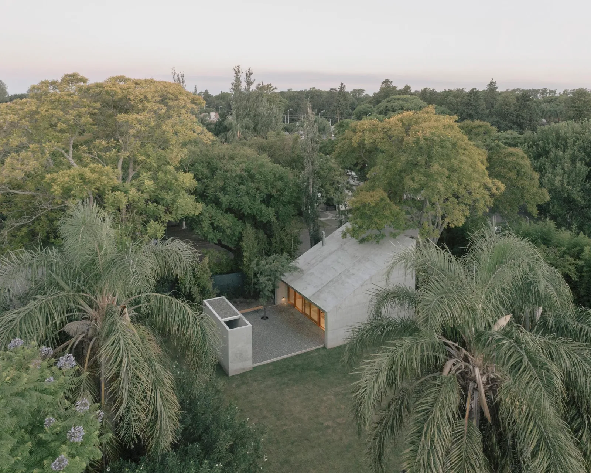
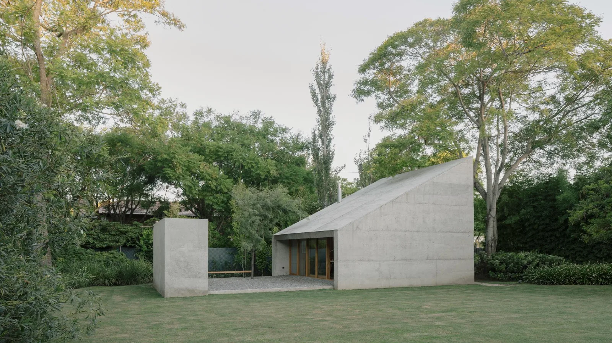
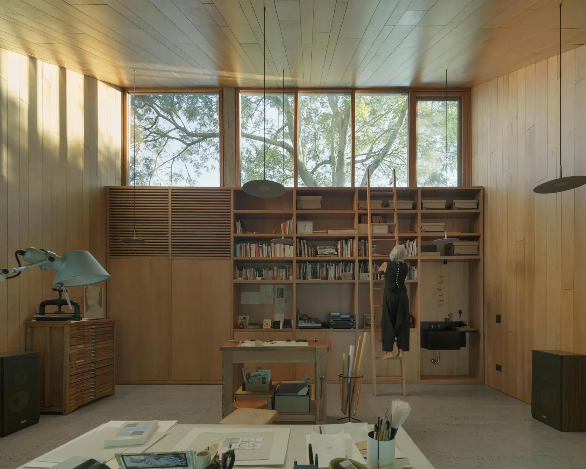
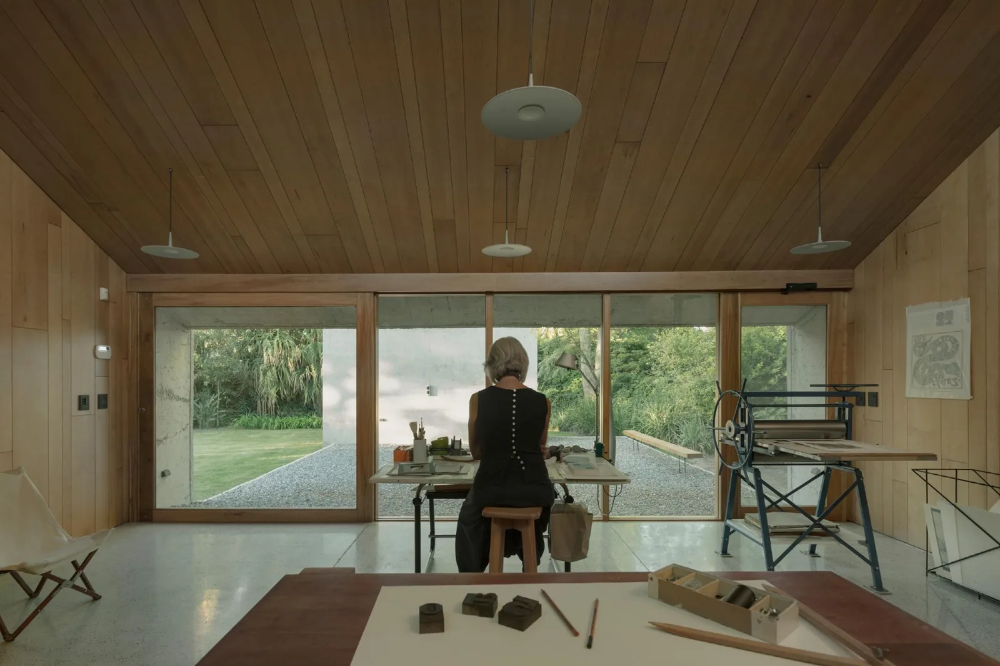
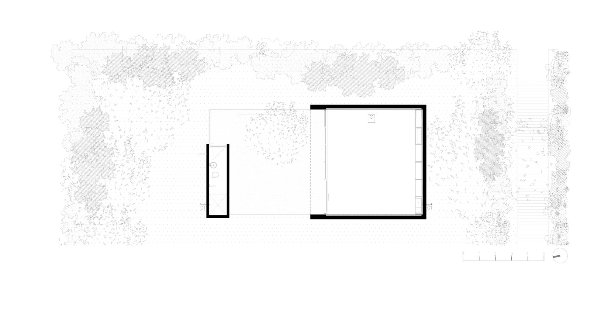
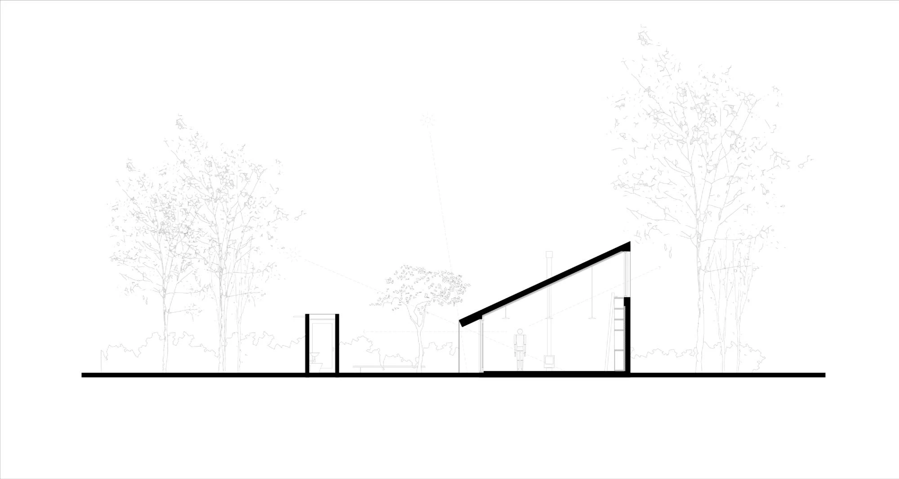
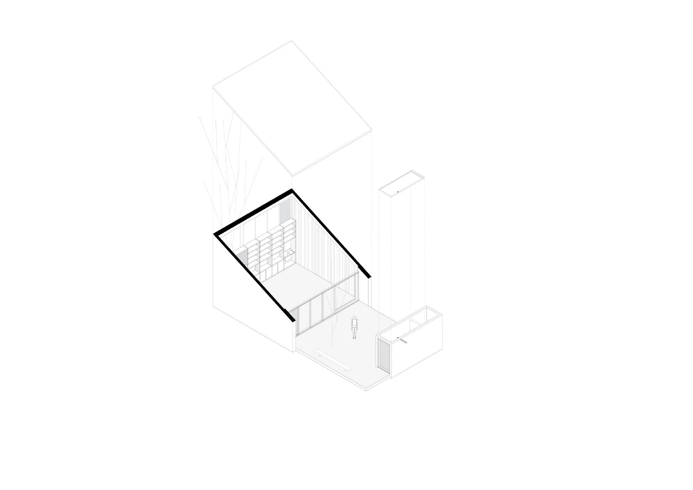
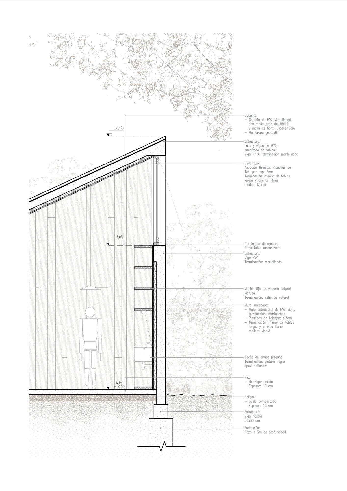

Artist's workspace · 2020
Atelier Workshop
Agustín Berzero
Rafaela, Argentina
The atelier is explicitly conceived as a place to think, paint and work. Services are separated from the main room, leaving an open workspace with a direct relationship to the surrounding garden.
The section expands upwards to bring natural light into the workroom. Outside, hammered concrete gives the enclosure the character of an artificial stone; inside, timber creates a contrasting atmosphere. The form reinterprets a neighbouring sloping-roof house and the scale of nearby vegetation.


Relevant connections
Images and drawings / 08













